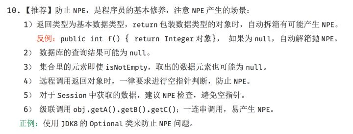
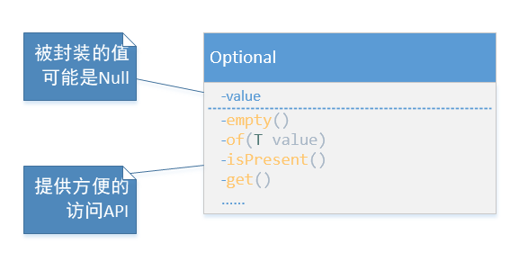
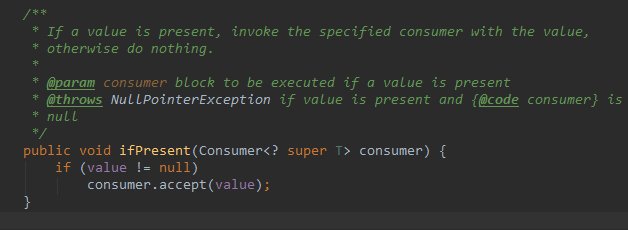
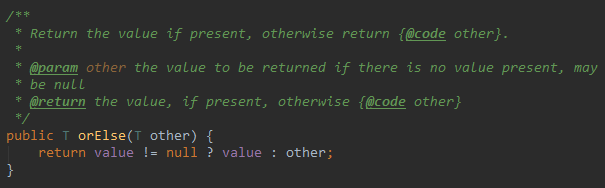
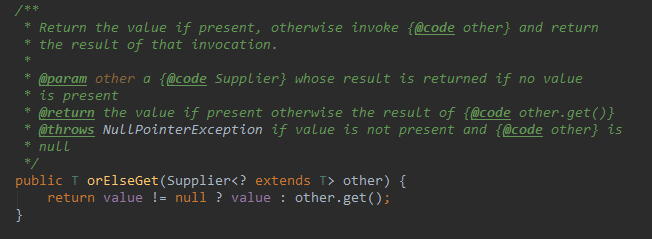
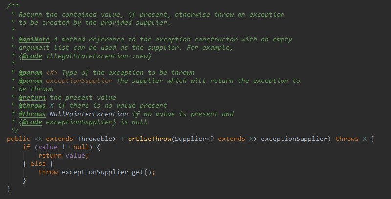
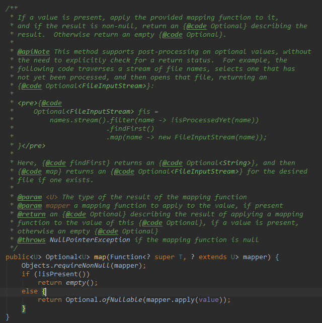
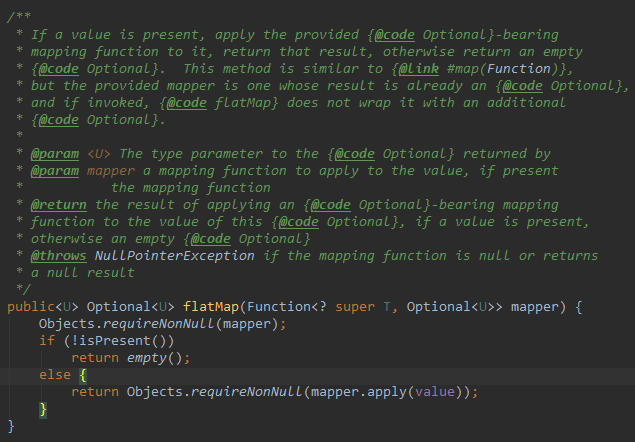

写过
Java程序的同学,都遇到过NullPointerException,为了防止空指针异常，程序中往往要添加很多非Null判断。这些判断不仅麻烦，还影响程序的欣赏性和可读性。既然非空判断不可避免，那有没有合适的框架来优雅的解决这一问题呢，java8之前，官方并未提供这样的语法糖，可以使用Guava等外部API来解决这一问题。直到java8提供了Optional API。
《阿里巴巴JAVA开发手册》也推荐开发者使用Optional API来避免NPE。


Optional类
可以将Optional类理解成一个容器,他将一个未知变量封装起来（这个变量可能为空），向外界提供了方便的API来获取这个变量，获取变量时Optional会进行null的检查。

构造一个 Optional
Optional.of(T value):该方法通过一个非null的value来构造一个Optional，返回的Optional包含了value这个值。对于该方法，传入的参数一定不能为null，否则便会抛出NullPointerException。Optional.ofNullable(T value):通过一个value来构造一个Optional,该value可能为null。Optional.empty():构造一个空的Optional,即封装的value为null。有时方法需要返回null时可以用此法构造。
Optional的isPresent()方法用来判断是否包含值，get()用来获取Optional包含的值 —— 值得注意的是，如果值不存在，将会抛出 NoSuchElementException 异常。
假设从数据库取某个User实体getUser(Long id)已经是个客观存在的不能改变的方法，那么利用 isPresent 和 get 两个方法，我们现在能写出下面的代码：1
2
3
4
5
6Optional<User> user = Optional.ofNullable(getUser(id));
if (user.isPresent()) {
String username = user.get().getUsername();
// 使用 username
System.out.println("Username is: " + username);
}
看上去貌似优雅了点，但和if (user != null)没有多大区别，而且还因为封装增加了代码量。所以我们来看看Optional还提供了哪些方法，让我们以正确的姿势使用Optional。
ifPresent

如果optional中的值非空，则调用给定的函数，否则什么也不做。那我们上面的例子可以这么写：
Optional<User> user = Optional.ofNullable(getUser(id));
user.ifPresent(u -> System.out.println("Username is: " + u.getUsername()));
是不是要比上面优雅的多。如果将打印用户名称封装成静态函数UserUtil.printName(User user)，则调用变为user.ifPresent(UserUtil::printName);
orElse

如果optional中的值非空，则返回该值，否则返回一个默认值(与get()比较)。该函数适合在需要默认值的场景中使用。
Optional<User> user = Optional.ofNullable(getUser(id));
System.out.println("Username is: " + user.orElse(new User("Unknown")).getUsername());
orElseGet

有时候不是需要简单的一个默认值，而是要一些操作之后得到默认值，这就需要orElseGet函数。
Optional<User> user = Optional.ofNullable(getUser(id));
System.out.println("Username is: " + user.orElseGet(() -> {
//do something
return new User();
}).getUsername());
orElseThrow

与orElse不同的是，orElseThrow方法当Optional中的值非空时，返回该值；否则抛出异常。该函数适合在需要抛异常的场景中使用。
Optional<User> user = Optional.ofNullable(getUser(id));
System.out.println("Username is: " + user.orElseThrow(() -> {
return new EntityNotFoundException("用户不存在:"+id);
}).getUsername());
map

如果optional中的值为空，则返回一个空的optional，否则返回一个新的Optional,该Optional的值是处理后的值。有多层次调用时需要用到该函数。
假设人员有上下级关系，某user的上级为leader，要打印leader的名称，代码如下：
Optional<String> leaderName = Optional.ofNullable(getUser(id))
.map(User::getLeader)
.map(User::getUserName)
.map(String::toLowerCase);
System.out.println(leaderName.orElse("Unknown"));
对于多层级的调用，Optional API会更加优雅。
flatMap

与map不同的是，flatMap在调用mapper后返回的必须是Optional对象，而map会自动将mapper返回的值包装成Optional对象。
Optional<String> leaderName = Optional.ofNullable(getUser(id))
.flatMap(user -> Optional.of(user.getLeader()))
.flatMap(leader -> Optional.of(user.getUserName()))
.flatMap(userName -> Optional.of(userName.toLowerCase()));
System.out.println(leaderName.orElse("Unknown"));
filter
filter方法接受一个Predicate来对Optional中包含的值进行过滤，如果包含的值满足条件，那么还是返回这个Optional；否则返回Optional.empty`。
Optional<String> leaderName = Optional.ofNullable(getUser(id))
.map(User::getLeader)
.map(User::getUserName)
.map(String::toLowerCase)
.filter(userName -> !userName.equals("Boss"));
System.out.println(leaderName.orElse("Unknown"));
Optional对Collection的处理
假设getUsers(Collection ids)返回User对象集合,那么怎么去除集合里面的空对象呢代码如下：
public List<User> getUsers(Collection<Integer> userIds) {
return userIds.stream()
.map(id -> Optional.ofNullable(getUser(id))) // 获得 Stream<Optional<User>>
.filter(Optional::isPresent)// 去掉不包含值的 Optional
.map(Optional::get)
.collect(Collectors.toList());
}
java9已经对上面的处理做了增强，这里不做讨论。
总结
Optional能帮助我们在代码里优雅的处理NPE问题，虽然这种方法并没有提高程序的效率，但在绝大部分情况下不会影响程序。如果还没有用到java8的同学，可以考虑引入Google的Guava库 —— 事实上，早在Java6的年代，Guava就提供了Optional的实现。
参考
https://segmentfault.com/a/1190000008692522
https://www.zhihu.com/question/47997295